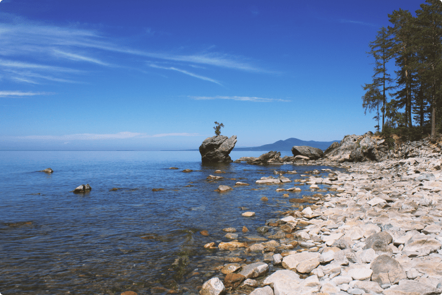
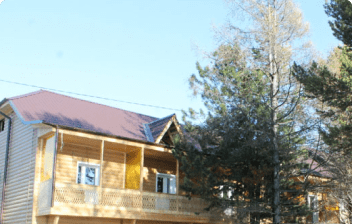

Горячинск
Старинный поселок рыбаков «Горячинск» находится на восточном побережье озера, расположен около 190 км. от города Улан-Удэ. Поселок назван в честь целебных горячих источников. Воды источников Горячинска благоприятно действуют на организм человека и полезны для лечения костно-мышечной, сердечно-сосудистой систем, суставов, органов дыхания. По составу вода горячинских источников азотно-кремнистая, слабоминерализованная, с содержанием сульфата натрия.
Климат этого места – более теплый зимой и прохладный летом – как будто специально создан природой для отдыха и лечения – живописная бухта, песчаные пляжи, чистый байкальский воздух и горячие источники.
Расписание маршрутных автобусов до Горячинска
Маршрутные автобусы до села Горячинск (Гремячинск, Турка) отправляются по расписанию от Автовокзала г. Улан-Удэ (ул. Советская, 1).
От ЖД Вокзала до Автовокзала можно доехать автобусами маршрута № 36 (расстояние – 4 остановки).
Из других районов города маршрутами: № 29, № 30, № 37, № 15, № 95, № 97.
Отправление из г.Улан-Удэ
8:00, 11:00, 15:00, 18:00
Отправление из с.Горячинск
7:00, 10:00, 13:00, 16:00
Предварительное бронирование билетов по телефонам
Автовокзал г. Улан-Удэ:
8-951-626-88-88
8-951-626-77-77
Автокасса с. Горячинск:
8-924-651-30-07
Выберите турбазу для отдыха

Гостевой дом «Горячий ключ»
Стоимость номеров от 600 руб.
- 
Гостевой дом «Горячий ключ»
Стоимость номеров от 600 руб.

Гостевой дом «Горячий ключ»
Стоимость номеров от 600 руб.
Гостевой дом «Горячий ключ»
Стоимость номеров от 600 руб.
Гостевой дом «Горячий ключ»
Стоимость номеров от 600 руб.
Гостевой дом «Горячий ключ»
Стоимость номеров от 600 руб.